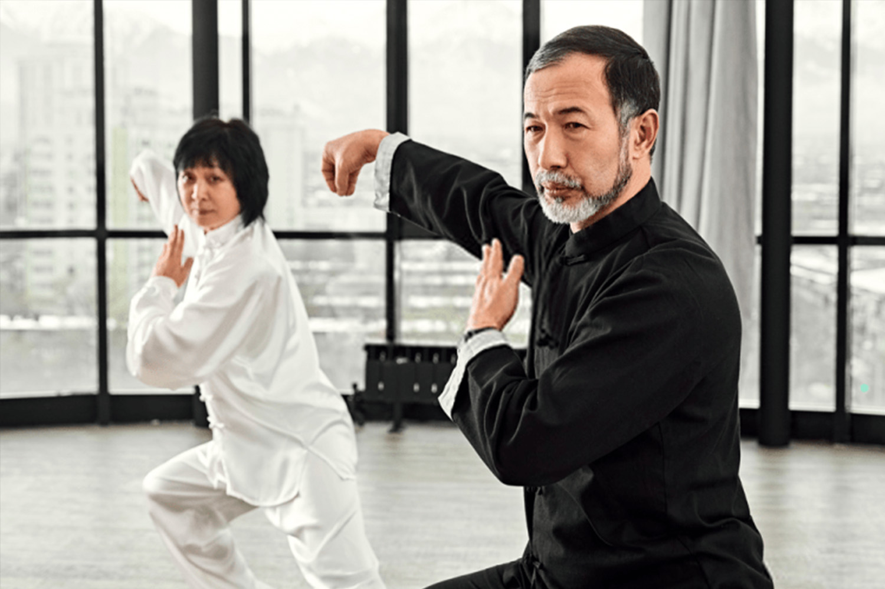

-
Đất Nước
Việt Nam -
Thành Phố
Hồ Chí Minh -
Tổ Đường
201 Hoàng Hoa ThámP.13, Quận Tân Bình -
Email
hotro@vinhxuanphai.com -
Hotline
(+84)908 809 833(+84)909 292 959


Đăng Ký Nhận Thông Tin
Thiết kế bởi: Bion Studio
KHÍ CÔNG LUẬN
Nền văn minh khoa học hiện đại, dù đã đạt được một khối lượng tri thức vô cùng đồ sộ, đến nay vẫn chưa có được quan niệm thỏa đáng về một nguyên lý bao trùm chung nhất, chi phối toàn bộ các mảng kiến thức về vũ trụ, điều mà tư tưởng Đông Phương đã có được đáp án với quan niệm về “Khí”.
Tuy vậy, giữa hai hệ thống tư duy vẫn có điểm đồng : đó là sự cảm nhận trực giác rằng cơ thể con người hợp thành một Tiểu Vũ Trụ nằm trong Đại Vũ Trụ và vận hành theo cùng qui luật vận hành của Đại Vũ Trụ. Có câu tục ngữ Trung Quốc đã nói : “Hiểu được Tiểu Vũ Trụ sẽ có thể hiểu được Đại Vũ Trụ”.
“Khí” là cái tinh túy cốt lõi bao trùm trời, đất và là nguồn gốc phát sinh vạn vật. Khí hạo nhiên được phân ra 3 dạng : – Thiên Khí, thuộc Dương, chi phối Địa cầu và được thể hiện qua tổng thể các sự tác động của Nhật, Nguyệt cùng các vì tinh tú khác đến sinh linh ở Địa cầu. – Địa khí, thuộc Âm, được thể hiện bằng năng lượng phát sinh từ Địa cầu tạo ra các dưỡng chất cần thiết để duy trì sự sống từ Thiên Khí. – Nhân Khí, tức cái Sinh khí luân chuyển bên trong cơ thể con người, vốn là sự kết hợp hài hòa giữa Thiên Khí và Địa Khí. Đó là Thiên sinh, Địa dưỡng, Nhân thành.
Lý giải về sự xuất hiện của những con người đầu tiên đã được đề cập tới trong các bản viết rất cổ và rất trùng khớp với những thuyết Vũ trụ học và Sinh học nổi tiếng nhất : “Những sinh vật nguyên thủy vốn hãy còn đơn sơ, được sinh ra do Âm Dương giao hòa từ phóng xạ vũ trụ và đã trải qua nhiều biến đổi tiến hóa trong hàng triệu, triệu năm mới trở thành những giống người đầu tiên trên Trái đất”. Sinh Lực bên trong mỗi con người một phần là do thừa hưởng từ cha mẹ sinh ra (Tiên thiên khí), một phần là do sự kết hợp của Thiên khí và Địa khí (dưới dạng không khí, thức ăn và các tia phóng xạ) được chuyển hóa tại ngũ tạng (các cơ quan chính yếu : Tâm, Can, Tì, Phế, Thận) (Hậu thiên khí). Sinh lực hay Khí lực, theo công dụng, lại được chia thành Vệ khí (để bảo vệ cơ thể) và Vinh khí (để nuôi dưỡng cơ nhục). Tiên thiên khí, được hình thành từ lúc thụ thai, giữ vai trò trọng yếu trong suốt cuộc đời của một người. Nếu lúc sinh ra mà tiên thiên khí yếu ớt hoặc không đầy đủ thì sau này ắt phải lắm tật bệnh. Bởi có câu : “Tiên thiên bất túc, hậu thiên bất nghi”. Tuy không tương đồng hoàn toàn nhưng có thể thấy điều này có điểm gần với lý thuyết về gien di truyền. Tiên thiên khí của một người sẽ suy yếu dần theo năm tháng cuộc đời cho đến lúc cạn kiệt và con người phải chết. Thuật trường sinh bất lão của các Đạo sĩ Lão giáo (các bậc Chân Nhân) là phương pháp tập luyện nhằm làm chậm quá trình lão hóa hay bồi bổ khí lực cũng tương tự như những phương pháp tập luyện của Võ Học. Hậu thiên khí cũng quan trọng không kém vì nó có thể bổ khuyết cho Tiên thiên khí thông qua không khí hít thở và các thức ăn được hấp thụ. Sách Hoàng Đế viết : “Người ăn không đúng cách thì sống không đúng phép dưỡng sinh”. Ở đây phải hiểu là ăn uống phải biết chọn lựa một cách phù hợp. Vì thế, trong Đông Y, việc hấp thụ các loại dược thảo luôn được chú trọng và áp dụng trong chữa trị. Sự hiểu biết thâm sâu về Thiên khí và Địa khí còn giúp người xưa lập ra thuật Phong Thủy, là ngành ứng dụng có khả năng cải sửa toàn bộ hoặc một phần cái Nghiệp hay số mệnh của con người. Cũng từ quan niệm trên về Khí, tình trạng bệnh tật hay khỏe mệnh của cơ thể con người được phương Đông xem như là tình trạng mất quân bình hoặc quân bình khí lực Âm Dương.
Định nghĩa về Khí Công:
Nguyên văn, từ “Khí công” có nghĩa là công phu rèn luyện Khí lực. Khí công có nguồn gốc từ những phương pháp cổ xưa từ 3000 năm trước nhằm rèn luyện dưỡng sinh trường thọ. Dù một số kiến thức về châm cứu và bài tập dưỡng sinh đã được phổ biến đại trà, các bí quyết về khí công từ trước đến gần đây vẫn chỉ được giới hạn lưu truyền trong nội bộ các môn phái võ thuật và các tôn giáo Phật, Lão. Mãi gần 30 năm sau này, các bí quyết khí công mới được phổ biến rộng rãi hơn qua sách, báo hoặc truyền dạy. Kỳ thực, Khí Công có rất nhiều công dụng, song trong chương trình giảng dạy lớp Khí Công, chúng tôi nhằm vào tác dụng trị bệnh tức là khía cạnh liệu pháp. Người học được tập theo một hệ thống kỹ thuật nhằm luyện khí, tụ và tán khí khắp châu thân, cường kiện được sức khỏe. Vì tập luyện Khí Công không đòi hỏi dùng nhiều sức lực nên mọi người ở mọi tình trạng thể lực đều có thể học, tập được. Khí công không những hữu ích cho người có bệnh mà còn có tác dụng phòng ngừa bệnh tật cho người đang khỏe mạnh.
Hiệu quả của Khí Công:
– Điều hòa giấc ngủ. – Tăng cường khả năng tập trung. – Giảm các cơn nhức đầu. – Kiểm soát các vấn đề biến dưỡng chất liên quan đến trọng lượng cơ thể (ốm yếu – béo phì). – Phát triển sự dẻo dai bền bỉ. – Cải thiện chức năng hô hấp, làm tăng dung lượng hít thở. – Giải tỏa căng thẳng, đem lại trạng thái an tĩnh. – Giảm đau nhức khớp (bệnh đau lưng, thấp khớp v.v…). – Tăng cường hệ miễn nhiễm, khả năng đề kháng cơ thể. – Tạo nguồn sinh lực dồi dào. v.v.v... Dĩ nhiên, hiệu quả còn tùy theo từng người vì Khí Công là nhằm tái lập sự quân bình Âm Dương, sự vận hành tự nhiên của cơ thể.
Hiệu quả của Khí Công:

Chương trình:
THÍCH & CHIA SẺ THÔNG TIN!!!
SỰ KIỆN NỔI BẬT

Lớp Võ Thuật Vịnh Xuân Quyền